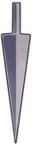
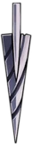
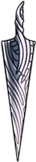

Lore
The Nailsmith is a blacksmith found in the City of Tears. This npc upgrades your nail in exchange for geos and Pale Ores. Pale Ores are items obtained from either quests or shops! Can be used to upgrade your nail.
In-Game Events
!Warning clicking this is a spoiler!
After the final upgrade of the knights nail, the nailsmith gives the knight an option whether to strike him or not with his nail as his final request.
Purchasable Items
These are the upgrades of each nail.



